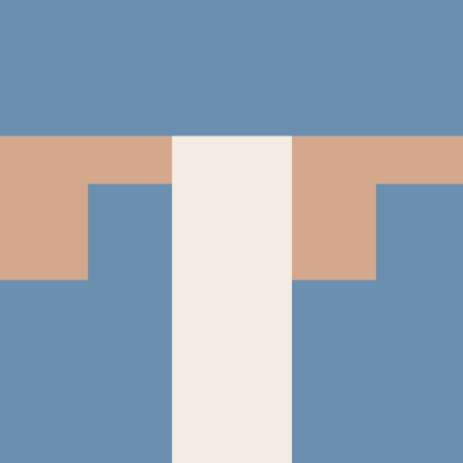
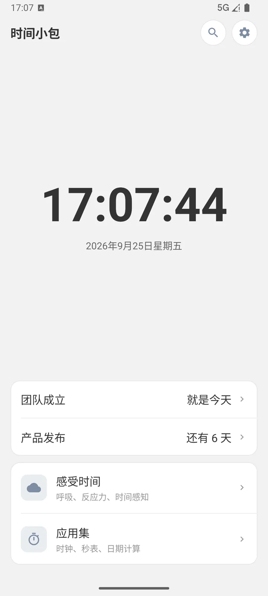
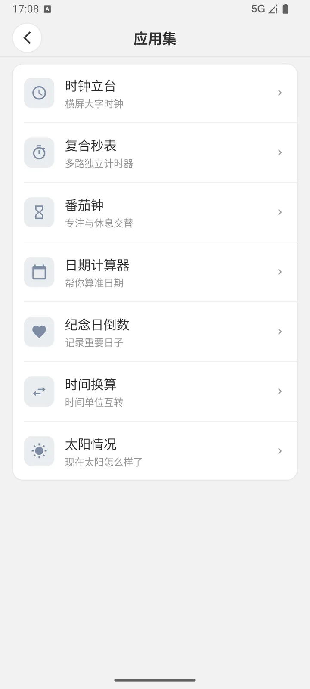
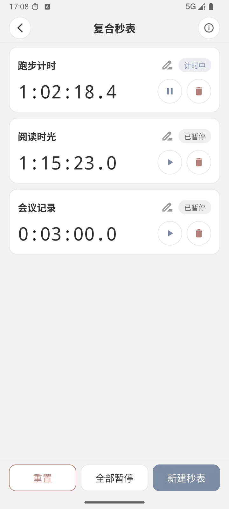
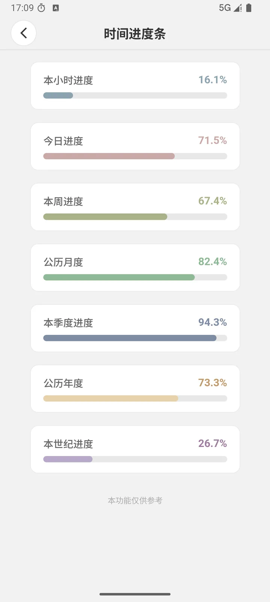
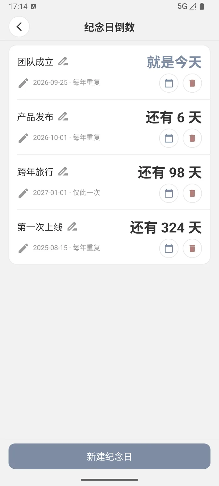
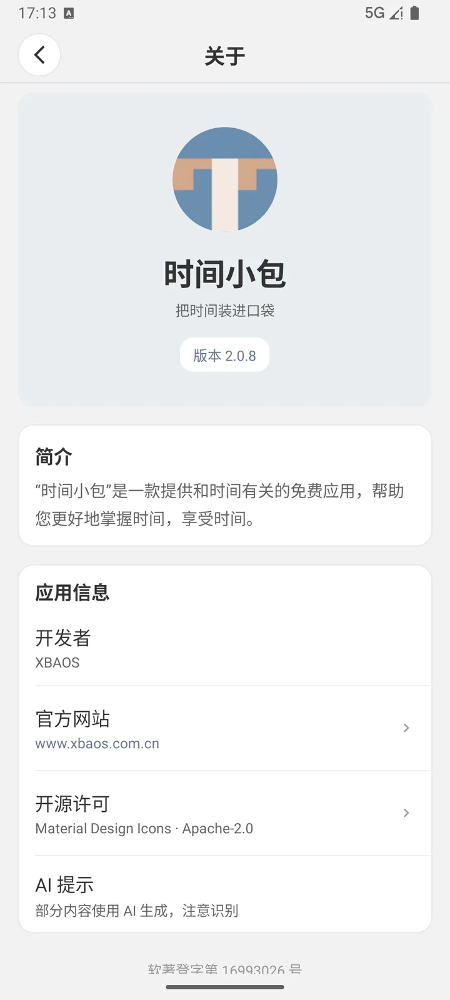

时间小包
把时间装进口袋
- 免费
- 无广告
- 免登录
- 可离线
支持：Android 7.0 及以上
至少拥有30MB的空余存储
应用截图






左右滑动查看更多
应用简介
「时间小包」是一款提供和时间有关的免费应用，帮助您更好地掌握时间，享受时间。
它不试图把您的一天塞进表格，也不催您「提高效率」。它只是把那些每天都会用到、又散落在各处的 小工具收进同一个包里：想看看现在几点就打开大字时钟，需要计时就开几路秒表， 想专注一会儿就有番茄钟，算日子、记纪念日、换算单位、看今天太阳几点落 —— 打开一个应用就够了。
部分功能一览
应用集 用得上的工具
- 时钟立台横屏大字时钟，放在桌上就是一块表
- 复合秒表多路独立计时器，各自暂停互不影响
- 番茄钟专注与休息交替，到点振动提醒
- 日期计算器算两个日期的差距，或往前推、往后推若干天
- 纪念日倒数记录重要日子，可同步到系统日历
- 时间换算年、月、周、天、小时之间随意互转
- 太阳情况当前所在地的日出日落、太阳高度与白天进度
感受时间 换一种方式看它
- 呼吸放松跟随节奏放松一分钟
- 反应能力测试测测你的反应速度
- 趣味年龄计算器换个角度看你的年龄
- 时间进度条本小时、今天、本周、今年…… 看看时间走到哪儿了
为什么值得留着
-
真的免费，也没有广告
不弹广告、不推会员、不看几秒倒计时，也没有「免费版 / 专业版」的分别。
-
不用注册，不用登录
打开就能用。不收集账号，也没有云端同步的强制要求，数据就存在你自己的设备上。
-
断网照样能用
大部分功能都在本地运行，飞行模式下同样完整可用 —— 不会因为网络问题变成一块白屏。
-
时区可以自己定
既可以跟随系统，也可以单独指定一个时区。跨时区出差或看比赛直播时，不必再改手机时间。
-
三种语言，深色模式
简体中文、繁體中文、English 可随时切换；深色模式跟随系统，夜里看不刺眼。
-
桌面小组件
部分功能自带桌面小组件，不用打开应用就能无感使用。
应用信息
- 开发者
- XBAOS
- 适用平台
- Android 7.0 及以上
- 应用语言
- 简体中文、繁體中文、English
- 下载方式
- Gitee Releases
- 官方网站
- www.xbaos.com.cn